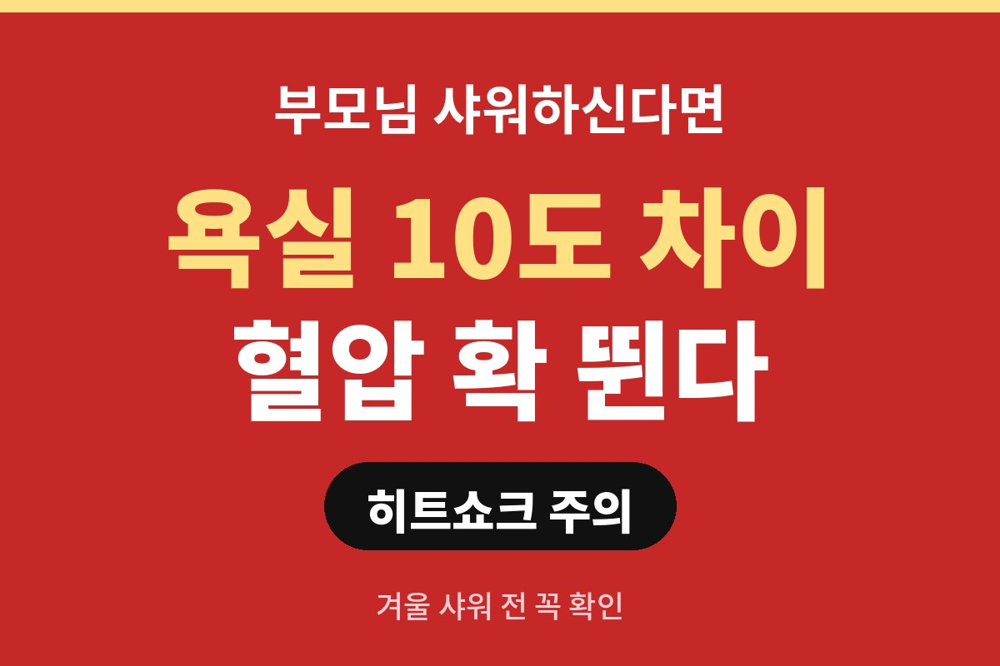
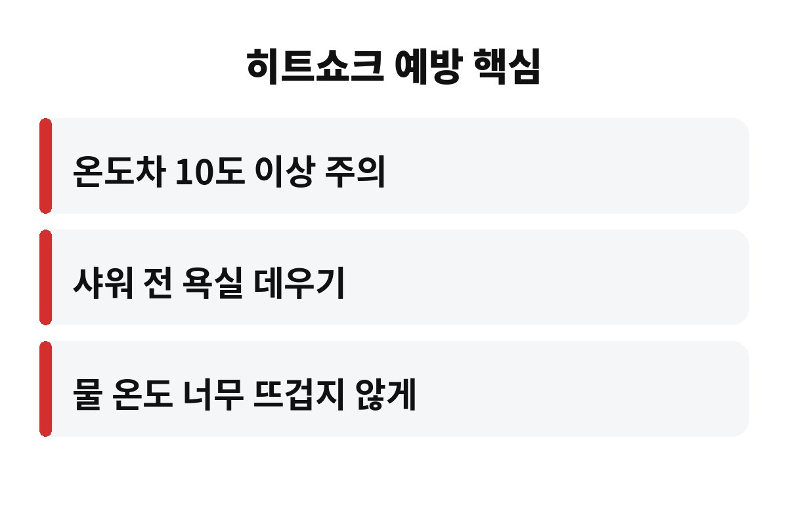
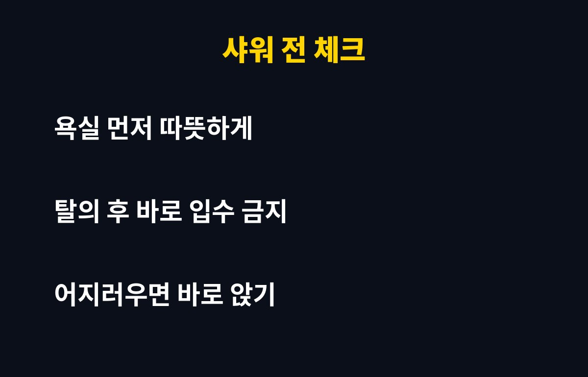

히트쇼크는 따뜻한 곳과 차가운 곳을 오가며 온도 차이가 크게 날 때 혈압이 급하게 오르내려 생기는데, 보통 10도 안팎의 차이부터 조심하라고 알려져 있어요. 날이 쌀쌀해진 요즘 욕실이 딱 그런 장소예요.
특히 부모님이 매일 샤워를 하신다면 한 번쯤 짚어볼 때예요. 같은 샤워인데 왜 겨울엔 위험하다고 할까요?
추운 곳에서는 혈관이 오므라들면서 혈압이 오르고, 따뜻한 물에 들어가면 혈관이 확 넓어지면서 혈압이 뚝 떨어지기도 해요. 이렇게 혈압이 롤러코스터를 타면 심장과 뇌에 부담이 가죠. 이 현상이 바로 히트쇼크예요.
증상은 어지러움, 가슴이 답답하거나 두근거림, 식은땀, 심하면 순간적으로 의식이 흐려지는 것까지 다양해요. 별일 아니라고 넘기기 쉬운데, 샤워 중이나 직후에 이런 느낌이 들었다면 몸이 보내는 신호일 수 있어요.
거실은 따뜻한데 욕실은 바깥처럼 차가운 집이 많거든요. 옷을 벗는 순간 찬 공기를 만나 혈관이 수축하고, 곧바로 뜨거운 물을 맞으면 이번엔 급격히 확장돼요. 짧은 시간에 두 번 크게 흔들리는 셈이에요.
고혈압이나 당뇨가 있는 분, 나이가 많으신 분은 혈관이 변화에 적응하는 속도가 느려서 더 조심해야 해요. 그래서 히트쇼크 예방은 부모님 세대에 특히 중요하다고 말하는 거예요.
| 요점 3줄 |
| ① 온도차 10도 안팎부터 조심 ② 욕실을 먼저 데우기 ③ 어지러우면 바로 앉기 |
가장 쉬운 건 욕실 먼저 데우기예요. 샤워 몇 분 전에 뜨거운 물을 틀어 욕실 안을 따뜻하게 만들어 두면 온도 차이가 확 줄어요. 욕실 난방기가 있다면 더 좋고, 없다면 샤워기를 바닥 쪽으로 틀어 수증기를 채우는 방법도 있어요.
물 온도도 중요해요. 너무 뜨거운 물은 혈관을 급하게 넓히니까 약간 따뜻하다 싶은 정도가 좋아요. 몸의 끝부분인 발부터 천천히 적시고 몸통으로 올라오면 훨씬 부드럽게 적응해요. 옷을 벗고 오래 서 있지 않는 것도 잊지 마세요.
또 하나 기억해 둘 건 시간대예요. 이른 아침이나 늦은 밤에는 체온과 혈압이 원래도 불안정한 때라서 욕실이 더 춥게 느껴지고, 몸도 더 예민하게 반응해요. 가능하면 집 안이 비교적 따뜻한 낮 시간에 샤워하시길 권해드려요. 술을 드신 직후나 식사 직후, 몸이 몹시 피곤할 때도 피하는 게 좋아요.

끝나고 나올 때도 방심은 금물이에요. 따뜻한 몸으로 찬 공기 속에 나오면 또 한 번 온도차를 겪거든요. 수건과 입을 옷을 욕실 가까이에 두고 바로 걸치는 게 좋아요. 일어설 때 어지러우면 무리하지 말고 잠깐 앉아서 숨을 고르세요.
반신욕이나 욕조 목욕을 즐기신다면 물에 한 번에 풍덩 들어가지 마시고, 손과 발부터 천천히 담가서 몸이 온도에 익숙해지게 해 주세요. 욕조에서 오래 버티는 것도 좋지 않아요. 땀이 나기 시작하면 수분이 빠져나가 혈액이 끈적해질 수 있어서, 10분 안팎으로 끝내고 물 한 컵을 마시는 정도가 적당해요.
화장실도 마찬가지예요. 밤에 따뜻한 이불 속에서 나와 찬 화장실에 갈 때 혈압이 확 오를 수 있어요. 겉옷을 침대 옆에 두고 걸치거나, 화장실에 작은 난방기를 두면 부모님 몸에 훨씬 덜 부담이에요. 작은 준비가 겨울 건강을 지켜줘요.

혼자 사시는 부모님이라면 가끔 안부 전화 한 통도 큰 도움이 돼요. 욕실 문은 잠그지 않도록 말씀드리는 것도 방법이에요. 작은 습관 몇 가지로 히트쇼크 위험은 충분히 줄일 수 있어요.
마지막으로, 평소 혈압약을 드시는 분이라면 약 시간과 샤워 시간이 겹치지 않는지도 살펴보세요. 약 효과가 한창일 때 뜨거운 물에 들어가면 혈압이 더 많이 떨어져 어지러울 수 있거든요. 이런 부분은 담당 의사에게 한 번 물어보시면 내 몸에 맞는 답을 들을 수 있어요. 가족 모두가 같은 정보를 알고 있으면 서로 챙기기도 훨씬 쉬워져요. 겨울마다 반복되는 사고는 대부분 사소한 습관에서 시작되니, 이번 주에 욕실 바닥 미끄럼 방지 매트도 함께 점검해 보세요.
여러분 집 욕실은 거실과 몇 도나 차이 날 것 같으세요? 오늘 저녁 한번 느껴보시고, 도움이 되셨다면 구독해 주세요.
※ 일반적인 건강 정보이며 개인 증상은 반드시 전문의 상담을 권장합니다.